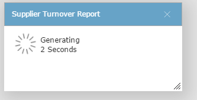

Foreground - generates the document or report (and displays a message):

When it is complete, displays the document or report in a new window. You can view it again later from Report Status.
Foreground printing is identical to background printing except that the screen is disabled until the print is completed. .